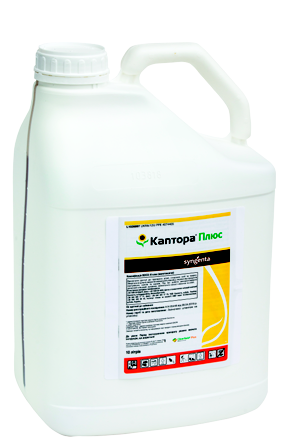

Гербіцид для Clearfield® Plus соняшнику
паспорт препарату
Каптора® Плюс, РК
16,5 г/л імазамоксу, 7,5 г/л імазапіру
Імідазолінони
Розчинний концентрат
Класифікація ВООЗ: III
10 л
Фото упаковки

головні переваги препарату
- Надійний захист від вовчка і бур’янів
- Посилений контроль осотів, амброзії, нетреби та злакових бур’янів
- Широке вікно застосування (від 2-го до 8-го листка)
- Контроль наступних хвиль бур’янів (ґрунтова дія)
- Можливість застосовувати в системах з енергоощадною технологією обробітку ґрунту
Застосування препарату
СОНЯШНИК (ГІБРИДИ, СТІЙКІ ДО КАПТОРА® ПЛЮС)
Спектр дії
Фаза внесення
Норма витрати, л/га
Кратність обробок / Термін очікування
Норма застосування гербіциду:
1,6 л/га — однорічні дводольні до 2-х листків.
2,0 л/га — однорічні дводольні (2–4 листки), в т. ч. амброзія полинолиста, лобода біла, нетреба звичайна, однорічні злакові та вовчок соняшниковий.
2,5 л/га — однорічні перерослі, багаторічні дводольні (осоти, березка до 6 листків у бур’янів.
Стадії культури:
2–4 листки у культури — однорічні злакові, однорічні і багаторічні дводольні бур’яни, вовчок соняшниковий.
6–8 листків у культури — іноді в разі пізніх посівів або при пізній появі вовчка соняшникового (всі раси).
Сумісність
Застосування в бакових сумішах з іншими гербіцидами недоцільне (високоефективний препарат). Препарат може бути використано в бакових сумішах з багатьма іншими засобами захисту, але перед застосуванням слід обов’язково перевірити препарати на сумісність.
особливості застосування
Каптора® Плюс слід застосовувати винятково на гібридах соняшнику, призначених для виробничої системи Clearfield® Plus. Найефективніше застосовувати, коли більшість бур’янів перебуває на початкових фазах розвитку. Не порушувати температурний режим при застосуванні та не застосовувати гербіцид, коли рослини соняшнику перебувають у стресовому стані під впливом абіотичних чинників (низькі або, навпаки, високі температури, надмірна вологість ґрунту тощо).
Рекомендована норма витрати робочого розчину
Норма витрати робочої рідини — 200–400 л/га.
ВИСОКОТЕХНОЛОГІЧНИЙ ПРЕПАРАТ
- потребує рівномірного внесення по всій площі (перекриття проходів обприскувача треба звести до мінімуму);
- не допускається знесення робочої рідини на сусідні поля
Температура застосування
Від +14 °С до +25 °С.
Організація сівозміни
Препарати з групи імідазолінонів не повинні використовуватися на одному полі частіше, ніж один раз на три роки.
ОРГАНІЗАЦІЯ СІВОЗМІНИ
Восени (в рік застосування, ~через 4 місяці)
Жито озиме**
Навесні (наступного року, ~через 9 місяців)
Соя
Горох
Боби
Кукурудза*
Овес*
Рис*
Сорго*
Ячмінь ярий**
Восени (наступного року, ~через 15 місяців)
Жито озиме
Ячмінь озимий
Навесні (~через 22–24 місяці після застосування)
Ріпак ярий
Гречка
Просо
Льон
Овочі
Інші культури
* Коли рН ґрунту вище за 6,2 і сума опадів більша, ніж 200 мм.
** При сумі опадів менше за 200 мм і рН нижче за 6,2 існує небезпека прояву фітотоксичності, негативні наслідки якої можна знизити за рахунок механічного обробітку ґрунту на глибину не менше як 15 см.